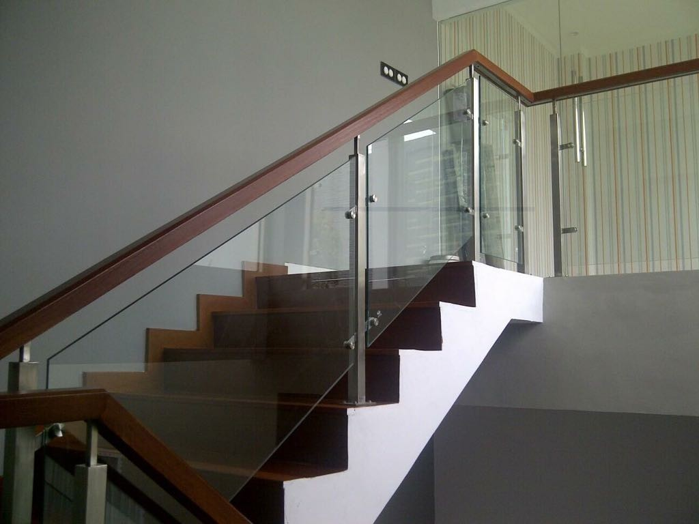
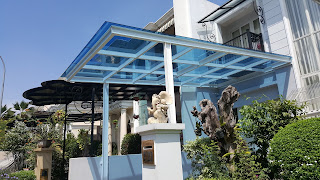
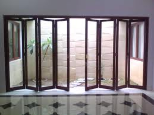
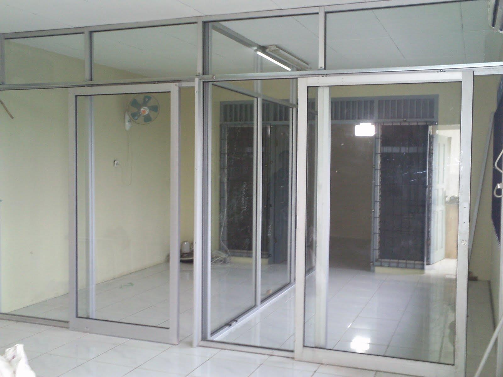

Semakin berkembangnya dunia pembangunan, maka hadir banyak material penambah yang melengkapi estetika sebuah banguanan. Namun, tak cuma estetika tetapi juga keamanan bagi penghuni di dalamnya. Tidak halnya hadir bermacam material kaca dan juga lantai yang semakin melengkapi skor keindahan sebuah bangunan. Berikut sedikit penjelasan yang dapat anda baca mengenai sebagai rujukan and ajika akan membangun rumah maupun tempat usaha.
Jenis-ragam kaca diantara lain kaca tempered, kaca shower, railing kaca, kanopi kaca dan masih banyak lagi.
Jual Kaca Cermin di Padang
Kaca cermin sekarang tak hanya dipakai sebagai aksesoris untuk perabotan seperti lemari rias. Kaca cermin dilapisi dengan pelapis transparan tipis dan oksida logam sebagai lapisan pelapis. Sekarang, cermin tidak hanya berbentuk persegi saja. Anda dapat tentukan desain seperti apa yang Anda inginkan. Salah satunya, kaca cermin Padang ini bersifat refletif. Jadi, Anda memiliki banyak alternatif untuk memutuskan cermin yang Anda pilih benar-benar dapat mempercantik interior rumah Anda. Sekarang perlu diamati juga adalah apakah Anda berharap mempunyai kaca cermin Padang desain minimalis atau yang elegan. Artinya, Anda tidak dapat mengamati yang ada di dalam ruangan.
Akan melainkan, ada juga opsi lain berupa kaca cermin Padang yang berbingkai. Tidak saja, desainnya saja yang dirubah. Atau Anda dapat memilih cermin yang dibangkai dengan berjenis-jenis ragam bahan seperti kayu, aluminum, plastik, dan bahan lainnya. Akan lebih menarik lagi kalau Anda menggunakan kaca cermin Padang ini sebagai bahan utama furniture. Anda bisa menambahkan bingkai atau tanpa frame pantas dengan kesukaan Anda. Cermin ini biasanya ditempatkan di kamar mandi, di atas wastafel, atau di kamar tidur. Tersedia kaca tempered Padang dengan beragam ukuran yang dapat anda pesan di dis.or.id. Harga yang terjangkau dan mutu terbaik adalah ciri khas dari dis.or.id. Tapi kunjungi dis.or.id untuk mendapatkan penawaran menarik. Disana anda dapat menerima kaca cermin Padang yang sesuai dengan harapan anda.
Info Pemesanan Selengkapnya
Google Maps: https://www.google.com/maps/d/u/0/viewer?mid=1HNPQwTg5M-VmcXHvNbVncTuxY7ALbdIQ&ll=-7.27380280025364%2C112.65243155000007&z=18
Note: https://www.facebook.com/notes/distributor-of-industrial-supply/pabrik-supplier-kaca-cermin/1785720801727799/
Event: https://www.facebook.com/events/135275393812568/
Distributor & Supplier Pintu Kaca
Kini telah hadir ratusan pintu kaca dengan desain yang berbeda-beda yang dapat di buat dan di pesan, entah itu pintu kaca frameless (tanpa pigura) atau pintu kaca dengan bingkai. Ada banyak desain pintu kaca yang dapat kita temui seperti pintu kaca berbentuk sliding (geser) atau folding (lipat). Tak Anda menyukai dengan pintu kaca dengan frame, Anda dapat pilih apakah bingkai tersebut terbuat dari bahan kayu atau almunium. Tidak Anda berkeinginan mempunyai pintu kaca lipat yang terdiri dari sebagian frame. Tersedia beberapa tipe kaca dengan kwalitas yang terbaik, mulai dari kaca tempered sampai yang non-tempered. sebagian ragam kaca yang paling kerap kali digunakan untuk membuat pintu kaca, mulai dari macam kaca tempered hingga kaca non-tempered.
Dis.or id siap menolong anda untuk membuatkan pintu kaca idaman anda. Bila spesialis yang benar-benar profesional sehingga betul-betul siap untuk menciptakan pintu kaca seperti apa yang mau Anda miliki.
Dis.or.id juga menyiapkan sebagian tipe kaca dengan ketebalan yang berbeda. Dis.or.id mempunyai energi yang sudah betul-betul profesional di bidang ini. Untuk budget yang lebih sedikit, Anda bisa memilih jenis kaca non-tempered.
Jasa Pemasangan Railing Kaca

Railing kaca sekarang semakin banyak alternatifnya. Tidak Anda mau mempunyai rumah dengan desain interior minimalis, amat ideal saat bagian tangga dan juga balkon mengaplikasikan railing kaca ini. Lupakan bahan seperti kayu. Anda dapat melakukan eksplorasi dengan mengaplikasikan bahan berupa kaca ketika ingin mempunyai rumah dengan desain minimalis. Namun, selain desain, Anda juga perlu memperhatikan bahan yang dipakai. Tak kaca ini pecah, pecahannya halus sehingga tidak akan melukai orang. Malah juga bahan yang dipakai.
Anda dapat memilih kaca dengan kualitas terbaik. Sekiranya itu, kaca ini bisa pecah tapi tidak menimbulkan pecahan yang runcing tapi pecahan kecil-kecil dan lembut. Dikatakan betul-betul aman lantaran kaca tempered tak menimbulkan pecahan yang runcing ketika tiba-tiba kaca pecah entah itu pengaruh kecelakaan atau bencana seperti gempa. Seandainya juga dengan railing.
Sekarang dis.or.id sudah menyediakan railing kaca berkulitas dan berkwalitas. Tentu dengan harga yang murah tapi tetap berkelas.
Distributor, Supplier & Jasa Pasang Kanopi Kaca

Pintu Kaca Shower pada kamar mandi merupakan salah satu alternatif yang baik untuk desain interior kamar mandi modern. Diantaraya yakni kaca tempered 8 mm, kaca tempered 10 mm clear, kaca tempered 12 mm clear, kaca laminated 12 mm clear, kaca laminated 5 mm + 5 mm clear non tempered kaca, kaca laminated 5 mm + 5 mm tempered clear dan masih banyak lagi. Canopy kaca dengan atap kaca memang sebuah bangunan yang asangat elgan untuk jaman modern seperti kini ini dengan harga yang betul-betul lumayan sekiranya di bandingkan kanopi atap lazim. Jadi sudah tak heran lagi segala orang mau mencari harga yang betul-betul kompetitif untuk menyesuaikan budget atau anggaran mereka masing – masing untuk membikin produk canopy kaca. Ada beberapa alasan mengapa Pintu Kaca Shower banyak digunakan salah satunya yakni kaca lebih kelihatan bersih dan rapi dan juga lebih gampang dalam perawatannya. Di samping pintu kaca shower akan membuat kamar mandi kecil tampak lebih besar.
Ini nampak dari bahan material yang di pakai dalam pembuatan kanopi kaca. Anda juga bisa memenfaatkan jasa pemasangan atap kanopi kaca dengan semua jenis kaca yang anda butuhkan yang cocok dengan kriteria atap kanopi. Sesudah kaca untuk atap kanopi cukup digemari. Disana anda akan memperoleh kanopi kaca yang layak dengan berbagai ketebalan dan harga yang cukup terjangkau.
Distributor & Supplier Kaca Shower
Kaca shower merupakan kotak atau alat yang berfungsi sebagai penyekat ruang khusus untuk kamar mandi. Tidak hanya cantik namun kaca shower bisa menjadi kaca pembatas antara lantai kering dan berair pada kamar mandi. Penyekat ini akan memisahkan antara tempat basah yang digunakan untuk mandi atau meletakan shower dan daerah lain yang adalah zona kering. Di samping pintu kaca shower akan membikin kamar mandi kecil menonjol lebih besar.
Disana anda dapat menerima kac shower yang pantas dengan harapan anda. Anda dapat buktikan sendiri.
Distributor, Supplier & Jasa Pasang Kanopi Kaca
Pintu Kaca Shower pada kamar mandi yakni salah satu opsi yang bagus untuk desain interior kamar mandi modern. Jika akan memberikan kesan lapang dikala berada di kamar mandi, mandi dengan shower akan memberikan kesejukan tersendiri dibanding kamar mandi dengan bak mandi. Dan sensasi mandi menjadi lebih asik untuk dirasakan. Disinilah letak perbedaan optis yang utama antara akrilik (acrylic) dengan kaca. Jika tembus pandang, kaca mengabsorpsi sinar yang masuk sehingga semakin tebal kaca maka semakin sedikit sinar yang dapat melewatinya, karenanya sifat transparannya makin berkurang.|Di samping pintu kaca shower akan membuat kamar mandi kecil terlihat lebih besar. Pada atap akrilik, penyerapan cahaya yang terjadi demikian kecil sehingga walaupun ketebalannya bertambah, sifat transparannya tidak banyak berubah.
Tak anda ketika ini sedang memerlukan kanopi kaca, anda dapat lantas mengunjungi dis.or.id. Seandainya fungsi utama kanopi sebagai pelindung untuk bangunan tersebut, pemasangan kanopi kaca juga bisa membuat bangunan menjadi terlihat lebih indah dan menarik, apalagi menggunakan konsep yang sama dengan konsep rumah minimalis. Tak anda sedang mencari kanopi kaca, anda dapat segera mengunjungi dis.or.id.
Jasa Maintenance Kaca
Jasa maintenance kaca menawarkan pelayanan perawatan bahan bangunan yang terbuat dari kaca. Tidak kaca tidak kusam, maka kaca harus dibersihkan secara regular. Dis.or.id memiliki kekuatan spesialis yang dapat sanggup membersihkan gedung pencakar langit yang bangunannya terbuat dari kaca.
Dis.or.id merupakan perusahaan jasa di bidang maintenance kaca gedung dengan memberikan beberapa pelayanan. Salah satunya pelayanan berupa pembersihan kaca dengan menggunakan alat pembersih yang bisa membuat kaca gedung Anda tampak bersih seperti sediakala. Tersedia alat penyokong agar seluruh sisi gedung yang terbuat dari kaca bisa dipastikan semua sisi gedung dapat di bersihkan. Disana anda bisa memanfaatkan jasa maintenance kaca dengan kekuatan ahli yang cakap membersihkan gedung kaca dengan produk pembersih kaca apa yang terbaik untuk menghilangkan kotoran dan kusam. Sekiranya spesialis juga sangat menentukan. Selain cuma dalam hal membersihkan kaca, mereka juga cakap menjalankan pembetulan serta penggantian kaca yang mengalami kerusakan.
Jasa Pemasangan Kaca Tempered
Kini jasa pemasangan kaca tempered menjadi opsi yang pas saat Anda berkeinginan mempunyai sebuah hunian atau gedung perkantoran yang komponen tertentu terbuat dari kaca tempered. Selain hanya melakukan pemasangan kaca tempered untuk gedung perkantoran, tapi juga untuk rumah hunian. Dis.or.id mempunyai semua kekuatan ahli yang di rekrut hanya mereka yang profesional yang tahu persis bagaimana sistem mengaplikasikan alat dan bagaimana membersihkan kaca gedung bertingkat. Karenanya dari itu, mereka sudah mulai menyenangi jenis kaca yang satu ini. Banyak komponen properti yang bisa diwujudkan dengan bahan berupa kaca tempered. Untuk gedung perkantoran, komponen yang paling sering kali diwujudkan dengan bahan yang satu ini ialah jendela dan pintu. Tetapi dulu cuma gedung perkantoran atau sentra perbelanjaan modern saja yang memakai macam kaca ini, sekarang rumah hunian juga sudah dibangun dengan kaca tempered.
Untuk itu, dis.or.id hadir sebagai penyedia jasa pemasangan kaca tempered yang telah berpengalaman. Kini dari kaca tempered dapat mengurangi bahaya cedera saat kaca pecah sebab dikala terjadi sesuatu seperti kaca pecah karenanya kaca tempered akan terurai menjadi butiran kecil yang relatif lebih aman dari potongan pecahan kaca umum. Bukan sembarang alat yang diaplikasikan untuk memotong kaca tempered cocok dengan keperluan. Bila aman kaca tempered juga mampu memberikan kesan estetika yang sungguh-sungguh bagus dibandingkan dengan kata jenis lainnya. Harga yang ditawarkan untuk pemasangan kaca tempered betul-betul murah.
Distributor & Supplier Pintu Lipat Kaca

Lalu, berapakah harganya? Anda mungkin menyangka bahwasannya kaca ini ditawarkan dengan harga selangit. Tipe kaca nomor 6 ini amat direkomendasikan untuk dibuat sebagai bahan membuat pintu lipat kaca.
Ukuran kaca menjadi elemen penentu berapa harga pintu kaca lipat yang Anda inginkan. Pastikan Anda memilih kaca tempered kualitas terbaik supaya pintu lipat yang Anda pesan bisa diaplikasikan dalam kurun waktu yang betul-betul lama. Hinges adalah aksesoris vital, sebab aksesoris inilah yang berperan untuk menopang berat pintu kaca lipat.
Jasa Pemasangan Kubikel Toilet

Kubikel kamar kecil memiliki desain yang mewah dan elegan sehingga siapa saja yang melihatnya pasti akan berminat, tak cuma itu kubikel kaca memberikan kesan bersih, rapid an tersusun. Banyak profit yang dapat didapat dengan memakai kubikel kamar mandi seperti dapat membikin toilet nampak lebih bersih dan juga cuma memerlukan sedikit space.
Rumah sakit dan perkantoran. Banyak keuntungan yang bisa di dapatkan dengan mengaplikasikan kubikel kamar kecil diantaranya adala efisiensi, dimana dalam satu ruangan dapat menampung dan membuat banyak kamar mandi. Disana terdapat kubikel kaca dengan berbagai ukuran dan ketebalan dengan harga yang cukup terjagkau di bandingkan dengan daerah lainnya. Apabila anda tertarik untuk memiliki kubikel kamar kecil, anda bisa langsung mengunjungi dis.or.id.
Profit dari sekat kaca memberikan merupakan bisa memberikan efek luas sebab ruangan tersekat melainkan secara visual tidak.
Tetapi penerapan kaca di kamar mandi dapat jadi situasi sulit ketika Anda meletakkannya dengan salah. Justru embun bisa menempel di kaca dan lambat laun dapat membikin kaca tidak sejernih semula.
Distributor & Supplier Partisi Kaca

Banyak rumah hunian yang sekatnya sekarang terbuat dari kaca. Tarif ini disebabkan banyak keunggulan dari partisi modern ini. Karena memang biaya pembuatan partisi ini jauh lebih murah. Biaya yang satu ini tergantung lama proses. Berbeda sekiranya Anda memilih partisi kaca. Tidak sekali partisi ini lebih hemat daripada membuat pembatas berupa tembok yang terbuat dari batu bata, pasir, dan juga semen. Lain kalau Anda memilih menggunakan partisi kaca. Bahan ini lebih murah dan dalam pemasangan. Akan tapi, Anda selektif dalam hal memilih kaca untuk partisi. Selain itu, tentukan juga kaca yang diaplikasikan apakah transparan, semi transparan, atau kaca cermin Padang yang ruangan sangat privat. Dis.or.id menjual pelbagai macam kaca penyekat yang kualitasnya terbaik. Apabila anda sedang mencari distributor dan supplier partisi kaca yang kaca dengan terbaik, anda tinggal mengunjungi dis.or.id. Disana anda akan partisi kaca yang layak dengan anda.